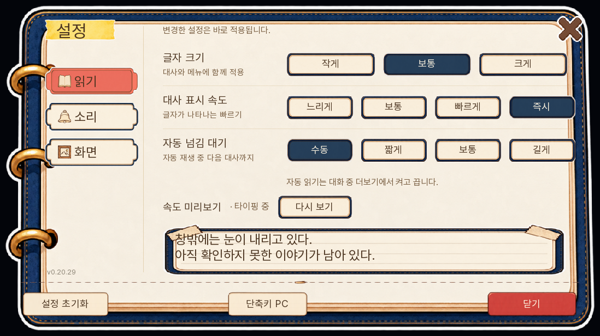
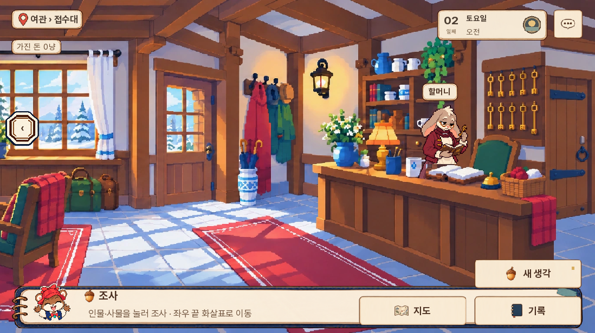
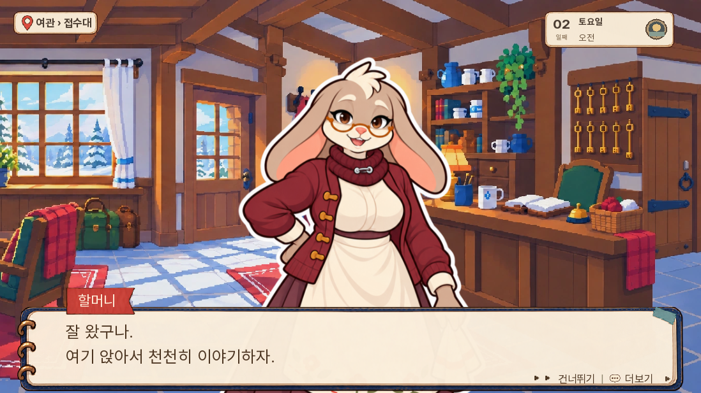
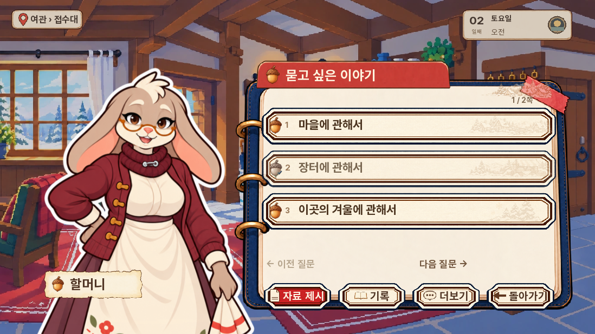
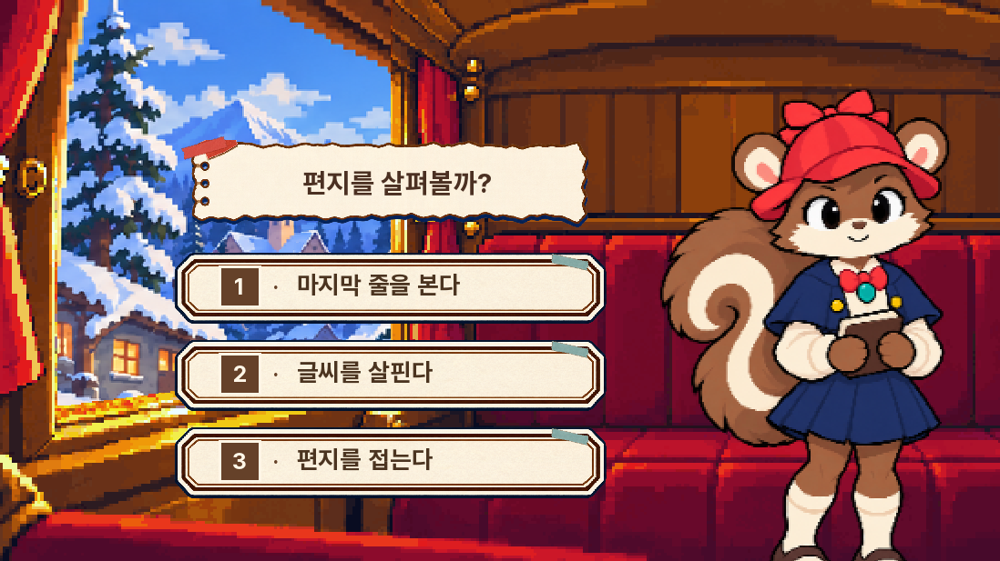
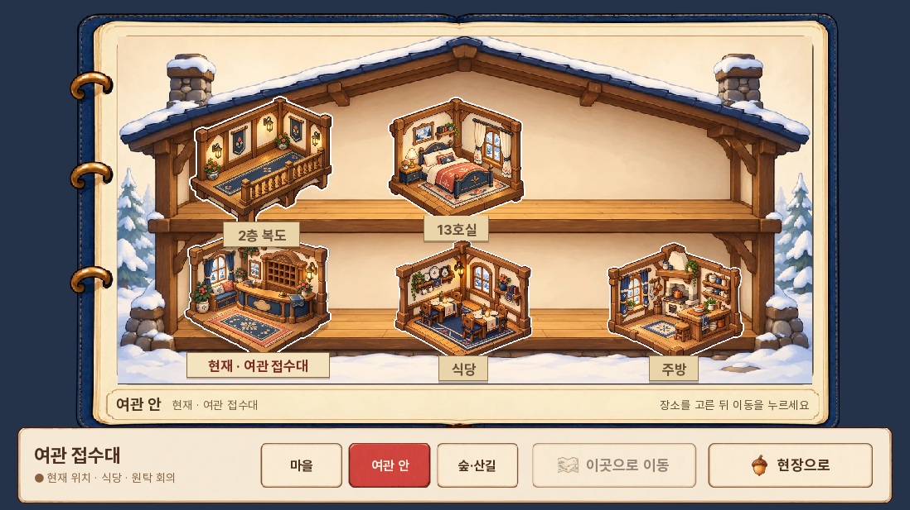
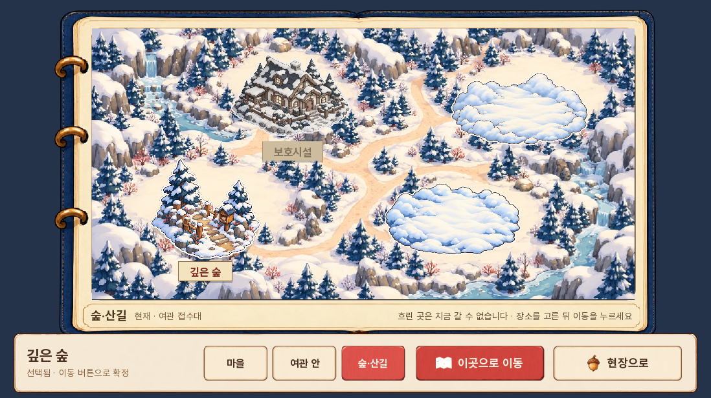

<meta charset="utf-8"><style>body{margin:0;background:#f4ebda;font:700 22px sans-serif;color:#4b3022}header{padding:14px}main{display:grid;grid-template-columns:640px 640px}figure{margin:0}figcaption{padding:8px 14px}img{display:block;width:640px;height:360px;object-fit:contain;background:#181613}</style><header>현재 개발본에 연결된 UI · 실제 실행 캡처</header><main><figure><figcaption>메인</figcaption></figure><figure><figcaption>설정</figcaption></figure><figure><figcaption>조사</figcaption></figure><figure><figcaption>대화</figcaption></figure><figure><figcaption>질문</figcaption></figure><figure><figcaption>선택</figcaption></figure><figure><figcaption>여관 지도</figcaption></figure><figure><figcaption>숲 지도</figcaption></figure></main>